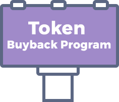
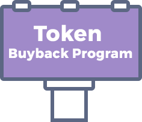

Legal Disclaimer
This whitepaper is for information purposes only and may be subject to change.
CoinMetro cannot guarantee the accuracy of the statements made or conclusions
reached in this whitepaper. CoinMetro does not make and expressly disclaims all
representations and warranties (whether express or implied by statute or otherwise)
whatsoever, including but not limited to: – any representations or warranties relating to
merchantability, fitness for a particular purpose, description, suitability or
non-infringement; – that the contents of this document are accurate and free from any
errors; and – that such contents do not infringe any third party rights.
CoinMetro shall have no liability for damages of any kind arising out of the use, reference
to or reliance on the contents of this whitepaper. This whitepaper may contain references
to third-party data and industry publications. As far as CoinMetro is aware, the information
reproduced in this Whitepaper is accurate and that its estimates and assumptions are
reasonable. However, there are no assurances as to the accuracy or completeness of this
information.
Although information and data reproduced in this Whitepaper are believed to have been
obtained from reliable sources, we have not independently verified any of the information
or data from third party sources referred to in this whitepaper or ascertained the
underlying assumptions relied upon by such sources. As of the date of publication of this
whitepaper, COIN (XCM) Tokens have no known potential uses outside of the CoinMetro
platform ecosystem and are not permitted to be sold or otherwise traded on third-party
exchanges.
This whitepaper does not constitute advice nor a recommendation by CoinMetro, its
officers, directors, managers, employees, agents, advisors or consultants, or any other
person to any recipient of this paper on the merits of participation in the CoinMetro Token
Sale. Participation in the CoinMetro Token Sale carries substantial risk that could lead to a
loss of all or a substantial portion of funds contributed.
COIN (XCM) Tokens are not being structured or sold as securities. COIN (XCM) Tokens are
not a participation in CoinMetro and COIN (XCM) Tokens hold no rights in CoinMetro.
COIN (XCM) Tokens are sold with an intended future functionality on the platform to be
developed by CoinMetro and all proceeds received during the Token Sale may be spent
freely by CoinMetro on the development of it’s business and platform.
This Whitepaper does not constitute a prospectus or offering document and is not an
offer to sell, nor the solicitation of an offer to buy any investment or financial instrument
in any jurisdiction. COIN (XCM) Tokens should not be acquired for speculative or
investment purposes with the expectation of making an investment return. No regulatory
authority has examined or approved any of the information set out in this Whitepaper.
No such action has been or will be taken under the laws, regulatory requirements or rules
of any jurisdiction. The publication, distribution or dissemination of this Whitepaper does
not imply that applicable laws, regulatory requirements or rules have been complied with.
COIN (XCM) Tokens could be impacted by regulatory action, including potential
restrictions on the ownership, use, or possession of such tokens. Regulators or other
competent authorities may demand that CoinMetro revises the mechanics and
functionality of COIN (XCM) Tokens to comply with regulatory requirements or other
governmental or business obligations. Nevertheless, CoinMetro believe they have taken
commercially reasonable steps to ensure that its planned mechanics are proper and in
compliance with currently considered regulations.
CoinMetro is in the process of undertaking further legal and regulatory analysis of the
intended functionality and mechanics of COIN (XCM) Tokens. Following the conclusion of
this analysis, we may be required to amend the intended functionality of COIN (XCM)
Tokens in order to ensure compliance with any legal or regulatory obligations that apply
to us. We shall update this Whitepaper and publish a notice on our website in the event
that any changes are made to the COIN (XCM) Token functionality.
Regulatory licenses and/or approvals in respect of that platform and COIN (being the token of this token sale) are likely to be required in a number of relevant jurisdictions in which CoinMetro intends to operate and in which COIN will be sold. It is not possible to guarantee, and CoinMetro does not make any assurances, that any such licenses or approvals will be obtained within a particular timeframe or at all. This means that the platform may not be available in certain markets, or at all. This could require fundamental restructuring of the platform and/or its unavailability. CoinMetro intends to operate in full compliance with applicable laws and regulations and obtain the necessary licenses and approvals in key markets. Certain functionalities may also be limited to certain persons to meet applicable regulatory requirements.
CAUTION REGARDING FORWARD-LOOKING STATEMENTS
This whitepaper contains forward-looking statements or information (collectively
“forward-looking statements”) that relate to CoinMetro’s current expectations and views
of future events. In some cases, these forward-looking statements can be identified by
words or phrases such as “may”, “will”, “expect”, “anticipate”, “aim”, “estimate”, “intend”,
“plan”, “seek”, “believe”, “potential”, “continue”, “is/are likely to” or the negative of these
terms, or other similar expressions intended to identify forward-looking statements.
CoinMetro has based these forward-looking statements on its current expectations and
projections about future events and financial trends that it believes may affect its
financial condition, results of operations, business strategy, financial needs, or the results
of the token sale or the value or price stability of COIN (XCM) Tokens.
In addition to statements relating to the matters set out here, this whitepaper contains
forward-looking statements related to CoinMetro’s proposed operating model. The model
speaks to its objectives only, and is not a forecast, projection or prediction of future results
of operations. Forward-looking statements are based on certain assumptions and analysis
made by CoinMetro in light of its experience and perception of historical trends, current
conditions and expected future developments and other factors it believes are
appropriate, and are subject to risks and uncertainties. Although the forward-looking
statements contained in this whitepaper are based upon what CoinMetro believes are
reasonable assumptions, these risks, uncertainties, assumptions, and other factors could
cause CoinMetro’s actual results, performance, achievements, and experience to differ
materially from its expectations which are expressed, implied, or perceived in
forward-looking statements. Given such risks, prospective participants in this token sale
should not place undue reliance on these forward-looking statements.


 
